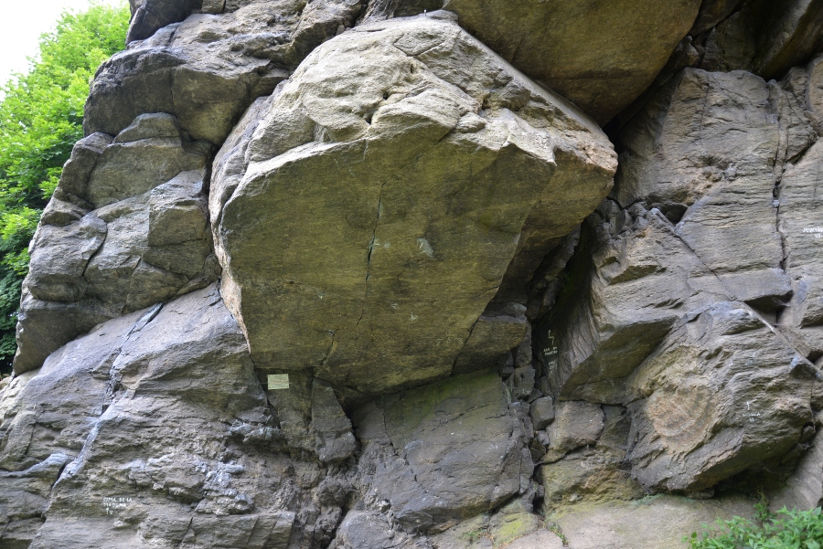

X
Mladkov
Mladkovské skály se nachází na okraji města Mladkov. Hlavním blokem této oblasti je Mariánská skála, kde jsou cesty pro lezení s lanem. Nachází se zde také boulderové bloky: Ementálové, Prasečí očka a okolí, Převis.

Zemská brána
Oblast Zemská brána se nachází mezi Bartošovicemi v Orl. a Českými Petrovicemi. Tato oblast je primárně boulderová, ale najdou se zde i lezecké cesty s lanem. Lezecké bloky jsou rozesety podél řeky a jsou dobře dostupné.